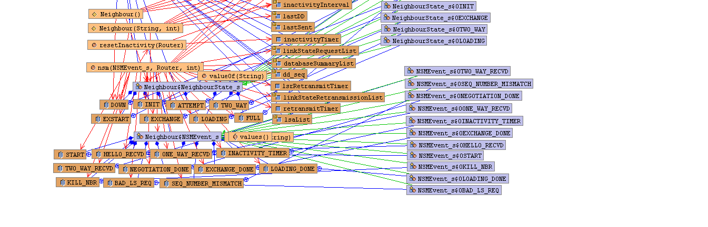

lspsim.Node
lspsim.Neighbour
lspsim.Node
lspsim.Neighbour
|
|||||||||
| PREV CLASS NEXT CLASS | FRAMES NO FRAMES | ||||||||
| SUMMARY: NESTED | FIELD | CONSTR | METHOD | DETAIL: FIELD | CONSTR | METHOD | ||||||||
java.lang.Object
public class Neighbour
This class implements the Neighbour data-structure

| Field Summary | |
|---|---|
java.util.Timer |
inactivityTimer
Inactivity Timer : Single shot Timer |
java.util.Timer |
lsrRetransmitTimer
LSR retransmit timer: single shot timer |
java.util.Timer |
retransmitTimer
retransmit timer : single shot timer |
| Constructor Summary | |
|---|---|
Neighbour()
Creates a new instance of Neighbour |
|
Neighbour(java.lang.String id,
int inactivity)
|
|
| Method Summary | |
|---|---|
java.lang.String |
nsm(lspsim.Neighbour.NSMEvent_s e,
Router r,
int port)
Neighbour state machine |
void |
resetInactivity(Router r)
reset Inactivity Timer |
| Methods inherited from class java.lang.Object |
|---|
clone, equals, finalize, getClass, hashCode, notify, notifyAll, toString, wait, wait, wait |
| Field Detail |
|---|
public java.util.Timer inactivityTimer
public java.util.Timer retransmitTimer
public java.util.Timer lsrRetransmitTimer
| Constructor Detail |
|---|
public Neighbour()
public Neighbour(java.lang.String id,
int inactivity)
| Method Detail |
|---|
public java.lang.String nsm(lspsim.Neighbour.NSMEvent_s e,
Router r,
int port)
public void resetInactivity(Router r)
|
|||||||||
| PREV CLASS NEXT CLASS | FRAMES NO FRAMES | ||||||||
| SUMMARY: NESTED | FIELD | CONSTR | METHOD | DETAIL: FIELD | CONSTR | METHOD | ||||||||